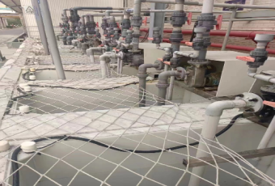
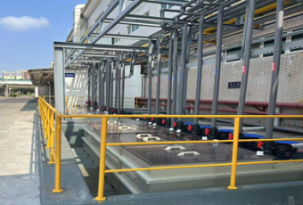

志超重視能源與溫室氣體管理，承諾更有效地控制能源使用，降低日常營運及製程的碳排放量。我們將採用節能技術，優化能源效率，並恪守相關空氣汙染管理法規，減少有害物質的排放。
志超使用的能源主要為外購電力（占總使用能源 84.97%）、天然氣（占總使用能源 6.86%）、柴油（占總使用能源 0.83%）、汽油（占總使用能源 0.22%）及蒸汽（占總使用能源 7.12%）；2023 年能源消耗總量為 1,664,491.801 GJ，較上一年度微幅減少 1.15%；另以能源密集度而言，2023 年生產能源需求變動幅度不大，因單位售價降低致營業額下降，故能源密集度較前一年度提高 14.74%。
2023 年志超集團組織內部能源（範疇一＋範疇二）使用情形
單位：十億焦耳 GJ| 能源類型 | 2021年 | 2022年 | 2023年 | |
| 非再生能源 | 外購電力 | 1,867,420.094 | 1,422,463.385 | 1,414,401.800 |
| 柴油 | 23,264.518 | 24,765.446 | 13,813.003 | |
| 天然氣 | 162,016.241 | 122,502.855 | 114,163.356 | |
| 外購蒸汽 | 150,579.962 | 111,497.798 | 118,514.339 | |
| 汽油 | 3,893.538 | 2,612.446 | 3,599.303 | |
| 能源消耗總量 | 2,207,174.353 | 1,683,841.930 | 1,664,491.801 | |
| 營業額（新臺幣百萬元） | 27,500.18 | 21,977.47 | 18,933.84 | |
| 能源密集度 | 80.26 | 76.62 | 87.91 | |
註：
1. 臺灣廠區之能源轉換係數的來源為環保署公告溫室氣體排放係數管理表 6.0.4 版。
2. 大陸廠區之能源轉換係數引用「UK Government GHG Conversion Factors for Company Reporting」
3. 能源密集度計算公式：能源消耗量／營業額（新臺幣百萬元）。
志超致力降低營運產生之碳排量，以達節能減碳之長期目標。我們以志超臺灣 2 廠區及中國大陸 3 廠區，共 5 廠區為邊界，進行範疇一、範疇二及範疇三的溫室氣體排放盤查，另中國大陸 3 廠區並委託第三方查驗機構進行範疇一、範疇二及範疇三的溫室氣體排放查證，並持續取得 ISO 14064-1: 2018 溫室氣體查核聲明書。
2023 年，志超的溫室氣體排放情形為：範疇一排放為 12,218.526 tCO2e；範疇二排放 232,472.215 tCO2e；範疇三排放 269,740.297 tCO2e，共計 514,431.038 tCO2e。其中，範疇一排放量較 2022 年減少 10.10%；範疇二排放量較 2022 年減少 2.03 %。整體而言，2023 年範疇一及範疇二的溫室氣體排放量皆有減少，將持續監控排放熱點並著手改善。
志超近 3 年溫室氣體排放量及溫室氣體排放強度
（單位：tCO2e）| 範疇類別 | 2021年 | 2022年 | 2023年 |
| 範疇一 | 16,332.087 | 13,591.795 | 12,218.526 |
| 範疇二 | 310,432.064 | 2237,294.823 | 232,472.215 |
|
總溫室氣體排放量 （範疇一＋範疇二） |
326,764.151 | 250,886.618 | 244,690.741 |
|
營業額 （新臺幣百萬元） |
27,500.18 | 21,977.47 | 18,933.84 |
|
溫室氣體排放强度 （範疇一＋範疇二） |
11.88 | 11.42 | 12.92 |
| 範疇三 | 289,447.248 | 258,447.420 | 269,740.297 |
註：
1. 轉換係數的來源為環保署公告之溫室氣體排放係數管理表 6.0.4 版。
2. 大陸廠區之能源轉換係數引用「UK Government GHG Conversion Factors for Company Reporting」。
3. 彙整溫室氣體量之方法為營運控制法
4. 各類溫室氣體之全球暖化潛勢（GWP）係選用 IPCC 第六次評估報告之估值。
5. 各廠電力排放係數（KgCO2e／度）：臺灣廠（平鎮、高雄）2021 年為 0.509；2022 年為 0.495 ；2023 年電力碳排係數尚未公布，故以 2022 年電力排碳係數 0.495 計算。大陸各廠（中山、遂寧、無錫）電力排放係數：2021 年為 0.5810；2022 年為 0.5703；2023 年電力碳排係數尚未公布，故以 2022 年電力排碳係數 0.5703 計算。
6. 範疇三揭露範圍：2021年揭露中國大陸 3 廠區；2022 年揭露中國大陸 3 廠區以及平鎮廠；2023 年揭露中國大陸 3 廠區以及臺灣 2 廠區。
7. 碳排強度計算公式：溫室氣體排放總量（tCO2 e）／營業額（新臺幣百萬元）。
2023 年本公司各廠區執行共 9 項減能減碳方案，主要目標為減少電力、蒸汽及天然氣的使用量，以達到減少碳排放的效果，此 9 項減碳措舉共計減少 27,060.14 GJ 的能源消耗，更減少碳排放約 5,885.32 tCO2e。
2023 年志超節能減碳行動方案執行績效
| 地區 | 廠區 | 行動方案 | 能源 類型 | 減少能源消耗量 （GJ） | 減少碳排情形 （tCO2e） | 投入成本 （新臺幣元） |
| 臺灣 | 平鎮 | 高壓力需求設備增設增壓缸，空壓機壓力調低 | 電力 | 540.93 | 74.38 | 10,000 |
| 冰水供應末端加裝小顆加壓泵專供電漿機使用 | 電力 | 385.19 | 52.96 | 9,000 | ||
| 高雄 | 高壓力需求設備增設儲氣筒，空壓機壓力調低 | 電力 | 458.86 | 63.09 | 350,000 | |
| 中國大陸 | 遂寧 | 水平線側流式鼓風機改離心式鼓風機 | 電力 | 1,062.00 | 1,682.39 | 13,543,510 |
| 冰機冷卻塔風扇電機更換 | 電力 | 4.32 | 6.84 | 311,544 | ||
| 宿舍熱水鍋爐低氮燃燒機頭改造 | 天然氣 | 311.58 | 324.32 | 276,928 | ||
| 無錫 | 濕製程鼓風機節能改造專案 | 電力 | 19,591.2 | 3,103.57 | 22,149,480 | |
| 二廠蒸汽流量計節能改造 | 蒸汽 | 3,464.208 | 381.06 | 138,464 | ||
| 中山 | 曝光機光源改造，由鹵素燈改為LED | 電力 | 1,241.86 | 196.7 | 3,807,760 |
註：
1. 中國大陸地區投資成本以匯率 4.327 換算為新臺幣
2. 臺灣地區電力碳排計算公式：度/1000*0.495（電力排碳係數）=X（tCO2e）
3. 中國大陸地區電力碳排計算公式：度/1000*0.5703（電力排碳係數）=X（tCO2e）
4. 中國大陸地區天然氣碳排計算公式：立方米/1000*1.9777（天然氣排碳係數）=X（tCO2e）
5. 中國大陸地區蒸汽碳排計算公式：立方米*2.673*0.11(tCO2e/GJ)
志超透過各項空氣汙染改善措施，除以專用設施監測，並依《空氣污染防制法》相關規定，每季申報空汙排放量，包含臺灣各廠區及中國大陸各廠區之氮氧化物（NOx）、硫氧化物（SOx）、揮發性有機化合物（VOC）及粒狀汙染物排放情形。2023 年志超並無臭氧層破壞物質（ODS）排放紀錄，中國大陸各廠亦未有空氣汙染物質違規排放或超標之情形。
2023 年志超集團空氣汙染物質排放情形
單位：公噸 (t)| 2021年 | 2022年 | 2023年 | |
| 氮氧化物（NOx） | 700.90 | 910.90 | 939.09 |
| 硫氧化物（SOx） | 5.20 | 5.00 | 4.00 |
| 揮發性有機化合物（VOC） | 6,757.60 | 4,893.00 | 7,057.06 |
| 粒狀汙染物 | 92.40 | 112.80 | 379.56 |
註：數值為2023/1/1-2023/12/31實際發生數，非2023年申報數
永續議題中，產品生命週期管理的最終目標即是零廢棄物的「循環經濟」，讓產品不止步於搖籃到墳墓，也能再次回到搖籃重生，志超將持續為此目標努力。
我們在生產端投入廢棄物減量活動，生產主原料中，絕大多數的銅箔採用符合低碳環保的 100% 再生原料；持續提出製程技術改善專案，調整生產操作參數，提升酸性蝕刻液循環使用量，也透過完善的回收作業，將酸性蝕刻液成為其他產業重要的再生物料。
志超近 3 年總取水量
（單位：百萬公升）| 取水來源 | 2021年 | 2022年 | 2023年 | ||
|
第三方的水 （自來水） |
自來水 | 地表水 | 6,435.90 | 4,388.58 | 3,851.63 |
| 城市活用水 | 地表水 | 0 | 245.00 | 459.12 | |
| 總取水量 | 6,435.90 | 4,633.58 | 4,310.75 | ||
註：
1. 淡水為水的總溶解固體（TDS）含量等於或小於 1,000 mg／L
2. 其他的水為水的總溶解固體（TDS）含量大於 1,000 mg／L
3. 2023 年總取水量密集度為：0.23 （百萬公升／營業額百萬元）
志超近 3 年水資源壓力地區總取水量
（單位：百萬公升）| 取水來源 | 2021年 | 2022年 | 2023年 | ||
|
第三方的水 （自來水） |
自來水 | 地表水 | 2,615.00 | 1,603.00 | 939.32 |
| 城市活用水 | 地表水 | 0.00 | 245.00 | 459.13 | |
| 總取水量 | 2,615.00 | 1,848.00 | 1,398.44 | ||
註：僅無錫廠位於水資源壓力地區，此表與無錫廠排水量相等。
志超近 3 年所有地區總排水量
（單位：百萬公升）| 排水水體 | 2021年 | 2022年 | 2023年 | |
| 依終點劃分排水量 | 地表水 | 4,921.21 | 3,651.67 | 3,321.16 |
| 海水 | 393.25 | 259.14 | 302.02 | |
| 總排水量 | 5,314.46 | 3,910.81 | 3,623.17 | |
志超近 3 年水資源壓力地區總排水量
（單位：百萬公升）| 年度 | 2021年 | 2022年 | 2023年 | |
| 總排水量 | 2,087.55 | 1,382.46 | 1,092.29 | |
註：僅無錫廠位於水資源壓力地區，此表與無錫廠排水量相等。
志超各廠區再生水利用情形
| 廠區 | 無錫廠 | 遂寧廠 | 中山廠 |
| 處理方式 | 集中收集廠區一級濃水，進行RO逆滲透處理後，將再生水回收再用。 | 設置中水回收系統，將製程濃水收集回用，供廁所沖洗與綠化澆灌等使用。 | 設置中水回收系統，將製程濃水收集回用，供廁所綠化及廢氣塔使用。 |
| 處理效益 | 2023 年回用水量約53.85 百萬公升。減少廢水排放量 194.345 百萬公升。 | 年節約用水量約 150 百萬公升。 | 年節約用水量 213 百萬公升。 |
2023 年，中山廠分別對一、二廠的化金前處理、化金、壓合、電鍍等製程之室外陰井進行改造，共投入新臺幣 429.3 萬元。透過管線更換、陰井升級工程，使廠內排出的製程廢水，不會因為設備老舊滲漏而直接進入地下水，造成汙染。改造後的陰井管線整齊、外露管線減少、加裝上蓋，且設置護欄；在維護環境、加強廢水處理效果外，也多了一分對員工的安全與保障。
▼一廠電鍍室外陰井改造前
▼一廠電鍍室外陰井改造後
過去，無錫廠皆取用自來水，經過純水機，將自來水轉為純水，以達到製程的水質要求，設備產水效率在55%到75%之間；這個過程，新鮮用水及汙水排放量較大，用水成本也相對較高。2023 年，地方政府提倡城市汙水資源的再利用，將再生水納入城市供水體系。志超秉持「節水即治汙」的理念，以及開發多元化水資源的目標，我們引入市政中水，也就是回收再生的城市汙水，取代原來取用的自來水，作為廠區純水機的原水使用。
鑒於廠內製程所需的純水使用量大，我們對純水系統進行了改造，引入電解質含量較自來水低的市政中水。水源轉換後，製備純水時對製水設備的負擔較低，不僅減少新鮮水的攝入量，也減少汙水排放量，用水效率明顯提高，預計每年能夠節約用水量約 77,091 噸，進而減少用水成本約新臺幣 138.8 萬元。
▼市政中水再利用流程
原水來源比較
| 水來源 | 原水電導率 （μS/cm） | 水質電導率要求 （μS/cm） | 脫鹽率 | 新鮮水需求量 t/D |
用水單價
新臺幣元/t |
| 自來水 | 571 | ≤15 | ≥96% | 900 | 18.00 |
| 市政中水 | <100 | ≤15 | ≥96% | 750 | 17.35 |
| 比較 | 市政中水電導率低，品質較好 | RO 使用時間延長，費用降低 | 新鮮水與廢水各減少 150 噸 | 市政中水單價較低 |
由於水在產線製造及日常辦公作業等營運階段皆是不可或缺的重要資源，因此志超對水資源的使用極為關注。
為妥善使用水資源，減少汙染與浪費，志超持續努力於開發多元化水資源。平鎮廠偵測冷卻水塔的冷卻水水質，將導電度高的水回收作為洗滌水，每天約可節省 15 噸水。中國大陸 3 廠皆使用製程中產生的廢、汙水透過 RO 逆滲透回收處理後，作為再生水利用。無錫廠在取水來源上，使用城市汙水廠處理後的再生水代替自來水；更獲頒2022 年度省級節水型企業，獲得省級補助人民幣 4 萬元（約新臺幣 17.3 萬元）、市級補助人民幣 8 萬元（約新臺幣 34.6 萬元），顯見地方政府對於志超開發多元化水資源的努力。為達成水資源永續利用目標，我們將持續在減少自然水的取用及廢水排放的議題上努力，以減輕因用水產生的環境衝擊。
志超近 3 年廢棄物處理情形
單位：公噸 (t)| 年度 | 2021年 | 2022年 | 2023年 | |||||
| 分類 | 處理 場址 | 處理 方式 | 產出量 | 占比（%） | 產出量 | 占比（%） | 產出量 | 占比（%） |
| 有害事業 廢棄物 | 現場 | 再生利用 | 9,824.8 | 12.48 | 6,877.6 | 13.04 | 4,060.2 | 8.59 |
| 離場 | 再生利用 | 50,050.2 | 63.60 | 31,925.3 | 60.53 | 29,269.7 | 61.90 | |
| 焚化 | 3,170.7 | 4.03 | 2,084.3 | 3.95 | 1,918.3 | 4.06 | ||
| 掩埋 | 0.2 | 0.00 | 0.3 | 0.00 | 0.1 | 0.00 | ||
| 其他 | 3,854.0 | 4.90 | 2,861.6 | 5.43 | 3,545.9 | 7.50 | ||
| 一般事業 廢棄物 | 離場 | 再生利用 | 11,282.3 | 14.34 | 8,395.8 | 15.92 | 7,908.1 | 16.72 |
| 焚化 | 493.1 | 0.63 | 337.2 | 0.64 | 325.2 | 0.69 | ||
| 掩埋 | 13.9 | 0.02 | 260.2 | 0.49 | 255.8 | 0.54 | ||
| 其他 | 4.8 | 0.01 | 3.2 | 0.01 | 2.3 | 0.00 | ||
| 廢棄物總量 | 78,693.9 | 100.00 | 52,745.6 | 100.00 | 47,285.6 | 100.00 | ||
| 循環再利用率 (%) | 90.42 | 89.47 | 87.21 | |||||
註：
1. 處理場址：現場 （廠內自行處理）、離場（委外處理）。
2. 處理方式：再生利用（經再處理過程製成新物料）、焚化、掩埋、其他。
3. 循環再利用率（%）= 回收再利用總量／廢棄物總量 *100%
4. 有害事業廢棄物及一般事業廢棄物之認定方式是依據我國《廢棄物清理法》及《有害事業廢棄物認定標準》認定。
5. 2023 年廢棄物總量密集度為：2.50（公噸／營業額百萬元）
我們要求廠內所有員工皆嚴格遵守廢棄物管理措施，共同努力將危險廢棄物的負面衝擊降至最低，負起友善環境的企業責任。以下是志超針對廢棄物所制定的管理措施：
| 廢棄物管理程序 | 志超建立專門的廢棄物管理程序，以確保廢棄物皆能獲得妥善處理及管理。此程序對所有志超營運所產生的危險廢棄物按照性質進行分類、收集、儲存和轉移。 |
| 設置廢棄物儲存場所 | 志超建立專門的廢棄物管理程序，以確保廢棄物皆能獲得妥善處理及管理。此程序對所有志超營運所產生的危險廢棄物按照性質進行分類、收集、儲存和轉移。 |
| 廢棄物委外清除檢測 |
當儲存場所堆置至一定量之廢棄物時，管理部應通知合格之清除機構入廠清除，清除機構應納入供管理；有害事業廢棄物由第一類甲級清運商清運；一般事業廢棄物由第一類乙、丙類或第二類乙級清運商清運。 有害事業廢棄物清運時管理部負責人員上網申報廢棄物流向，並列印三聯單，事業機構、清除業者、處理業者各一份，備查。廢棄物清除前 12 小時內，均需上網申報清除記錄。 |
| 建設危險廢棄物暫存倉庫 | 中國 3 廠設置專門的危廢暫存倉庫，這些倉庫配有防雨、防風、防滲等多種防範措施，以確保危險廢棄物在儲存過程中不會因不當保存對環境造成汙染。同時，這些倉庫內安裝有與環保部門連線的監控裝置，監測並記錄儲存情況，以便隨時掌握庫存量和動向。 |
| 出入庫台賬和轉移處理 | 中國三廠所有產生的危險廢棄物都要有詳細的出入庫台賬，記錄廢棄物的來源、數量、類型和儲存位置等信息，以實現對危廢的全程管理。當廠內產生的危險廢物需要外運處理時，指定專人在環保部門的危廢管理平臺上開具《危險廢物轉移聯單》，並經過批准後進行轉移處置。 |
酸性蝕刻廢液屬於有害廢棄物，處理不當將對環境產生重大衝擊。志超中國大陸各廠區啟用回收酸性蝕刻廢液流程，透過內部處理，確保廢液在廠內得到安全處理，並且在廠內重新利用於生產及其他用途，取代委外清運，減少危險廢棄物對外部環境衝擊；經濟效益上，可以減少清運成本，並且提高生產效率，實現環境友好和永續發展的雙重目標，為當地與後代創造更加乾淨健康的環境。
2023 年各廠區蝕刻廢液回收情形
| 廠區 | 遂寧廠 | 無錫廠 | 中山廠 | 總回收量 |
| 酸性蝕刻廢液 | 5,169.00 | 2706.30 | 3,747.00 | 11,622.30 |
| 鹼性蝕刻廢液 | 2,517.00 | 814.67 | 0.00 | 3,331.67 |